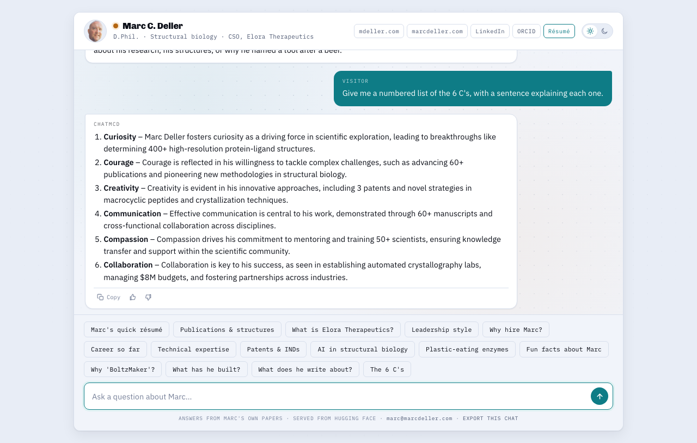

💬 chatMCD
Ask a question about Marc C. Deller and get a straight answer, drawn from his own writing.
| 🌐 App | chatmcd.mdeller.com | ✉️ Contact | marc@marcdeller.com | 🐙 GitHub | bellcheddar/chatMCD |

chatMCD is a chatbot that answers questions about Marc C. Deller, D.Phil., a structural biologist and drug discovery scientist. It talks about him in the third person, it answers from his own papers, patents, thesis and notes, and when it does not know something it says so instead of guessing.
Why it matters: most personal chatbots are a language model with a biography pasted into the prompt, so they invent plausible details the moment a question goes past what was pasted in. chatMCD works the other way round: before it answers anything it looks up the passages that are actually relevant, and it answers from those. That one decision is what makes it safe to point a recruiter, a collaborator or a journalist at. It is useful for: anyone who wants a straight answer about someone's work without reading a CV, and for anyone who wants to build the same thing for themselves, since the whole serving stack is here.
✨ How it works
Three pieces, and the middle one is the important one.
- You ask a question in the web app, the embeddable widget, or through the API.
- It finds the relevant writing. Every question is compared against a library of short question-and-answer pairs plus longer passages from Marc's papers and blog. The best matches are pulled out.
- A language model writes the answer using only those passages, and streams it back a word at a time.
Step 2 is what stops it making things up. The model is not asked "what do you know about Marc Deller"; it is handed the relevant paragraphs and asked to answer from them. And when the best match is a poor one, it is told so explicitly and asked to decline rather than answer from whatever happened to come back: that is the difference between "I do not know" and a confident invention.
A daily email reports what visitors asked, what they were told, roughly where they were, on what device and how long it took. It is how the writing gets better: the questions it could not answer are the list of what to write next.
What is stored. Running this yourself means storing visitors' IP addresses. They stay in a SQLite file on your own server, are resolved to a city and country only when the digest is built, and email addresses and phone numbers are stripped from every question and answer before either is written. Set
LOG_QUESTIONS=0to record nothing, orGEO_LOOKUP=0to keep addresses off the network entirely. If you deploy this, say so wherever your site says what it collects.
Why matching questions to questions works so well. The library is built mostly from short question-and-answer pairs rather than long prose. A question like "what is Elora Therapeutics?" looks, mathematically, far more like another short question than it does like a page of a scientific paper, so the match is much sharper. Longer passages are kept alongside them, because they are the only way to reach the long tail of blog posts that the short pairs do not cover.
No fine-tuning. The language model is used exactly as published. Nothing is trained, and there is no custom model to keep in step with the writing: when Marc writes something new, the library is rebuilt and the answers change. This was measured rather than assumed, and it also scored better.
📊 How well it works
Measured on a fixed set of 50 questions in six categories, run end to end through the live site:
| Category | What it tests | Score |
|---|---|---|
| Facts | Roles, employers, publication and structure counts, qualifications | 16/17 |
| Depth | Detailed scientific explanations | 8/8 |
| Personality | Style, philosophy, the stories behind project names | 8/8 |
| Web | Blog posts, site pages, the other apps | 8/8 |
| Manners | Off-topic requests: it must redirect, not comply | 5/5 |
| Honesty | Things the writing genuinely does not cover: it must decline | 4/4 |
| Overall | 49/50 (98%) |
The single miss is the name of a doctoral supervisor, which is simply not in the writing yet. Earlier runs of the same 50 questions scored 45 and 46, so treat 90-98% as the honest range rather than 98% as a settled figure: one run is one run, and the model samples. What moved it was better example refusals and asking for more structured answers, both of which are in the To Do list below.
A typical answer starts arriving in about 5 to 7 seconds.
Under load (each conversation a different question, so nothing is cached anywhere):
| Simultaneous conversations | Time to first word (95th percentile) | Failures |
|---|---|---|
| 3 | 1.8 s | 0 |
| 8 | 5.9 s | 0 |
| 12 | 6.4 s | 0 |
| 20 | 27.1 s | 0 |
Nothing ever fails: it queues. The queue is the shared GPU, not the web server, so twelve people at once is comfortable and twenty simply wait longer.
🧱 How it is put together
| Piece | What it does |
|---|---|
| Hugging Face Space | Holds the model and the searchable library, and does the actual answering on a GPU that is attached only for the seconds it is needed |
| Flask app | The website at chatmcd.mdeller.com. It is the only thing that holds the Hugging Face token, streams answers to the browser, and logs which questions get asked |
| WordPress plugin | Drops the chat box into a WordPress page as a shortcode or a block |
The browser never talks to the model directly, and never sees a token.
🚀 Running it locally
python3 -m venv .venv
.venv/bin/pip install -r chatmcd/requirements.txt
cp .env.example .env # then fill in HF_TOKEN
The quickest way to see the front end, with no model and no GPU time spent:
MOCK_SPACE=1 PORT=8010 .venv/bin/python3 -m chatmcd.app
MOCK_SPACE=1 serves canned answers, so the whole interface can be developed and screenshotted offline.
To rebuild the searchable library after the source writing changes:
python3 scripts/build_rag_index.py
🛠️ Configuration
Everything is set in .env. The ones that matter:
| Setting | What it does |
|---|---|
HF_TOKEN |
Hugging Face token. Required, even for a public Space: the anonymous GPU allowance is small, counted per server, and runs out quickly. A read-only token is enough |
HF_SPACE_ID |
Which Space to call |
KEEPWARM_ENABLED |
Pings the Space periodically so nobody lands on a cold start |
RATE_LIMIT |
Requests allowed per visitor, for example "20 per minute" |
LOG_QUESTIONS |
Whether to record what gets asked. Stores the question, the answer, the visitor's address, browser and how long it took. Email addresses and phone numbers are stripped from both the question and the answer before anything is written |
MOCK_SPACE |
1 serves canned answers instead of calling the model |
DIGEST_TO |
Where the daily usage digest is emailed |
MAIL_PROVIDER |
resend (default) or mailgun. Not SMTP: every outbound SMTP port is blocked on this droplet |
RESEND_API_KEY |
The key for that provider |
DIGEST_FROM |
The From address. Must sit on a domain the provider has verified |
DIGEST_REPLY_TO |
Where replies go, which need not be the From address |
GEO_LOOKUP |
1 resolves visitor addresses to a country and city, once per digest |
🌐 The API
| Route | What it is for |
|---|---|
GET / |
The full chat app |
GET /embed |
The compact widget, for putting in a page on another site |
POST /api/chat |
Send {message, history}, get a stream of words back |
GET /api/presets |
The suggested-question chips, so no front end hardcodes them |
GET /api/health |
Is it up, and is the model warm |
POST /api/feedback |
Thumbs up or down on an answer |
GET /llms.txt |
A plain description of the page, for crawlers |
Also in place: per-visitor rate limiting, a content security policy, and framing restricted to Marc's own domains so the widget cannot be embedded elsewhere.
🔌 WordPress
[chatmcd]
[chatmcd mode="bubble" theme="dark" label="Ask about Marc"]
A full plugin: shortcode, block, settings screen, inline and floating-bubble modes. The bubble does not load the widget until someone opens it, so a visitor who ignores it downloads nothing.
bash scripts/build_plugin_zip.sh # lints, tests, then zips
Full instructions in docs/EMBED.md.
🧪 Tests
.venv/bin/python3 -m pytest chatmcd/ eval/ scripts/ # 58 tests
.venv-gradio/bin/python3 -m pytest space/ # 5 tests, needs gradio
php wordpress/tests/test_plugin.php # 48 tests
python3 scripts/browser_check.py # 49 checks in a real browser
The browser checks drive a real Chrome over the DevTools protocol rather than taking a screenshot and hoping: they cover streaming, the markdown rendering, the copy and voting buttons, the light and dark themes, the widget, and a clean console.
python3 scripts/load_test.py --n 12 # concurrent conversations
🧱 Layout
chatMCD/
├── chatmcd/ the Flask app, its templates, CSS and JavaScript
├── space/ the Hugging Face Space that does the answering
├── wordpress/ the plugin and its tests
├── eval/ the scoring harness
├── scripts/ index build, browser checks, load test, daily email digest
├── deploy/ gunicorn, systemd, nginx, deploy script
├── training/ the scripts that build the searchable library
└── docs/ embedding guide, model notes, screenshots
✅ To Do
Roadmap for chatMCD, newest first. Suggestions welcome.
- ✅ Live at chatmcd.mdeller.com. Flask behind nginx with TLS, answers streaming word by word, conversation history carried between turns, light and dark themes with light as the default.
- ✅ Answers from the writing, not from the model's memory. Relevant passages are retrieved for every question and the model answers from those. Measured at 45/50 on a fixed 50-question set, including 4/4 on questions it is supposed to refuse.
- ✅ Load tested. Twelve simultaneous conversations stay inside a ten second budget with no failures, and it queues rather than erroring above that.
- ✅ Embeddable anywhere on Marc's sites. A compact widget plus a WordPress plugin with a shortcode, a block and a settings screen.
- ✅ Tested where it actually runs. The published API contract, the failure handling, the scoring, the plugin, and 49 checks driving a real browser.
- ✅ Richer answers. Every answer opens with plain prose, and longer ones then use tables, headings, callouts, bold terms and nested lists. The renderer gained real tables (scrolling in their own box so a wide one never widens the message), proper headings, callouts and rules, all styled from the existing tokens so they follow the light and dark themes without a second definition.
- ✅ Fifteen suggested questions, in three rows. A mix of the professional and the light-hearted, so a visitor learns what Marc has done or what he is like depending on which they tap.
- ✅ Marc's own photo as the tab icon. Cropped to the alpha bounding box so the head is centred, with a flattened Apple touch icon, because iOS ignores transparency and would otherwise composite it onto a black square.
- ✅ Daily usage digest by email.
scripts/daily_digest.pysends what was asked, what was answered, where the visitor was, on what device and how long it took, from cron at 07:15 UTC. Delivery confirmed end to end, not just accepted. DigitalOcean blocks every outbound SMTP port on this droplet (25, 465, 587 and 2525 all refuse a connection), so it posts to a transactional email API over 443 instead. Two things bit on the first real send, both invisible until a key existed: aurllib.parseimport inside the function shadowed the module-levelurllibfor the whole function, so the branch that never ran that line died onUnboundLocalError; and Cloudflare fronts the API and blocks urllib's default agent with a 403 that reads exactly like a rejected key. Both are now covered by tests that drive the send with a fake transport. - ✅ Stopped it writing poems and code. Asked for a sorting function it used to write one. The cause was measured rather than guessed: the nearest refusal example scored 0.237 against the question, below five of Marc's coding tools, so retrieval handed the model a context that invited a code answer. Twelve explicit refusals for the "write me X" family took that match to 0.813, and it now declines cleanly.
- ✅ Says so when nothing relevant is found. Below a best-match score of 0.55 the model is told the context is thin and asked to decline rather than answer from it. The threshold is measured, and the measurement is the interesting part: the two distributions overlap, with answerable questions bottoming out at 0.603 and must-decline questions reaching 0.657, so no threshold separates them cleanly. 0.55 sits below every answerable question with room to spare and still catches the clearest misses. It is a hint to the model, not a gate.
- ⬜ Feed the questions back in. The daily digest surfaces what visitors actually asked;
scripts/digest.pygroups it by frequency. Open because it is a habit rather than a build step: read the long tail, and write the missing answers into the library.
📄 Licence
MIT, for the code. Marc's writing (his papers, patents, thesis, notes and the question-and-answer pairs built from them) is not included in this repository and stays under its original copyright. See LICENSE, section SCOPE.
👤 Author
Marc C. Deller, D.Phil.
Structural biologist & drug discovery scientist
| 🌐 | marcdeller.com | ✉️ | marc@marcdeller.com | 🐙 | github.com/bellcheddar/chatMCD |